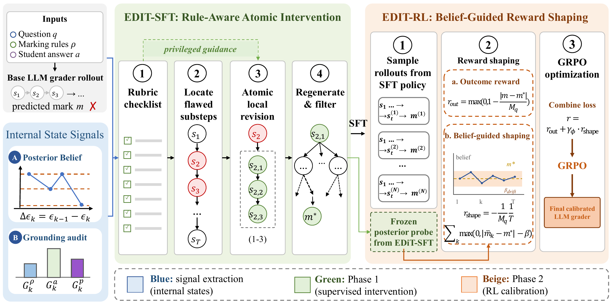
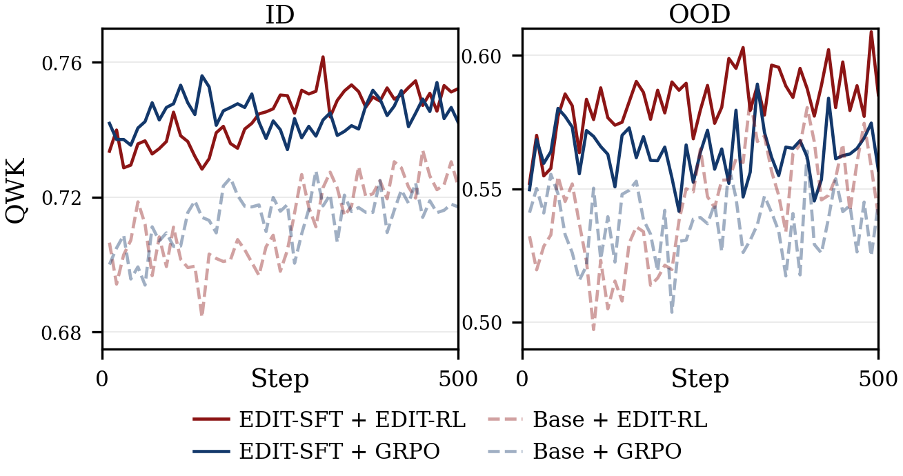
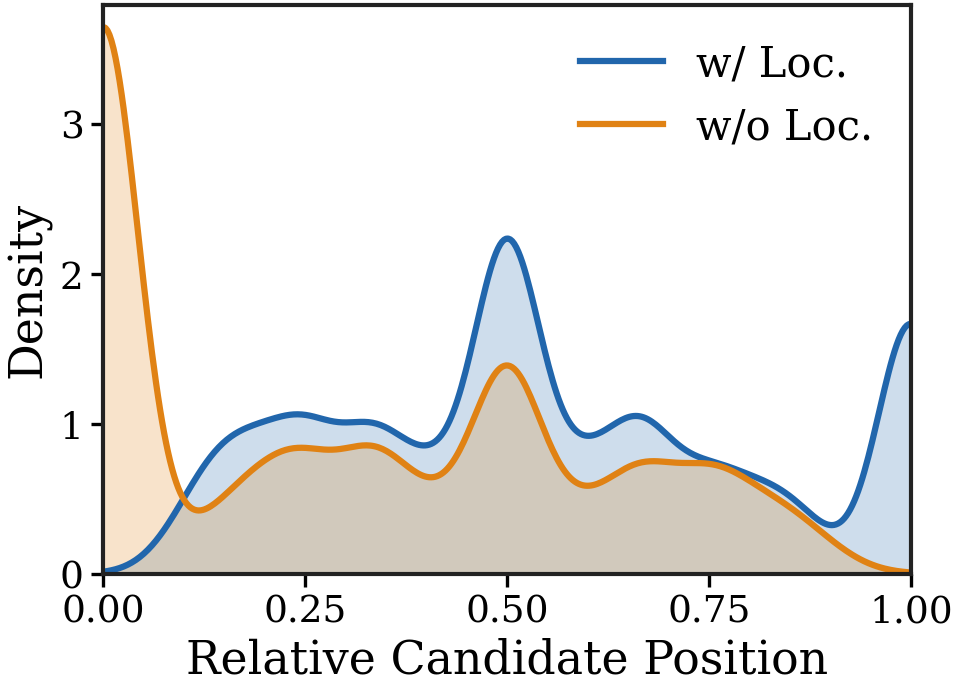

Abstract
Reliable rubric grading requires more than accurate score prediction. Each judgement must be grounded in the mark scheme and evidence from the student answer. Existing credit-assignment and intervention methods, primarily designed for self-contained reasoning tasks such as mathematics reasoning, struggle in this setting because they do not identify where grading reasoning goes wrong or how the model's belief about the final mark changes during reasoning. We propose Evidence-Diagnosed Intervention Training (EDIT), a two-phase framework for training more rubric-faithful LLM graders. First, EDIT-SFT locates problematic reasoning steps using internal model signals: posterior belief over the final mark and input-grounding scores. It then revises only these local steps with help from a rubric checklist. Second, EDIT-RL calibrates the grader with belief-guided reward shaping, penalising large harmful belief drifts while still allowing helpful exploration. Experiments on two real-world, multi-subject grading benchmarks demonstrate that EDIT consistently outperforms strong supervised fine-tuning and reinforcement learning baselines on both in-domain and out-of-domain splits, with ablation studies confirming that internal-state diagnostics drive these gains. Under deterministic rubric-edit interventions, EDIT-SFT is the most rule-responsive of all evaluated systems, and EDIT-RL largely retains this responsiveness while improving accuracy.
How EDIT Works

Results
| Dataset (split) | Base | GRPO | DGPO | InT | EDIT-SFT | EDIT-RL |
|---|---|---|---|---|---|---|
| SAS — avg. of 3 subjects (OOD) | 0.727 | 0.689 | 0.721 | 0.731 | 0.781 | 0.794 |
| Private-Biology (ID) | 0.701 | 0.727 | 0.704 | 0.648 | 0.738 | 0.754 |
| Private-Biology (OOD) | 0.524 | 0.535 | 0.533 | 0.508 | 0.548 | 0.575 |
| Private-Physics (ID) | 0.477 | 0.480 | 0.535 | 0.551 | 0.527 | 0.555 |
| Private-Physics (OOD) | 0.456 | 0.465 | 0.449 | 0.409 | 0.472 | 0.487 |
Grading accuracy (QWK, higher is better). Quadratic weighted kappa on the SAS benchmark (History, Geography, Physics; all questions unseen in training) and the proprietary Private-Science benchmark, with Qwen3-8B as the policy model for every method. The InT column reports its final RL stage. EDIT-RL is best on every dataset and split, and question-level cluster-bootstrap tests show its SAS gains remain significant after Holm correction while the baselines' do not.


Rule-faithfulness under interventions. Beyond accuracy, we test whether a grader truly follows the rubric by applying deterministic edits to the mark scheme whose gold-score change is known exactly, and measuring how closely the model's score change tracks it. EDIT-SFT is the most rule-responsive of all evaluated systems (mean absolute deviation from perfect responsiveness of 0.285 vs. 0.412 for the base grader), and EDIT-RL largely retains this responsiveness while improving accuracy. Points-total rescaling remains unsolved for every evaluated system, exposing absolute-count anchoring as an open challenge that accuracy metrics alone cannot detect.
BibTeX
@inproceedings{wu2026edit,
title = {{EDIT}: Evidence-Diagnosed Intervention Training for Rule-Faithful {LLM} Grading},
author = {Wu, Zhihao and Zhang, Linhai and Wang, Taiyi and Zhao, Runcong and Andrews, Peter and Aloisi, Cesare and He, Yulan},
booktitle = {Findings of the Association for Computational Linguistics: {EMNLP} 2026},
publisher = {Association for Computational Linguistics},
year = {2026}
}